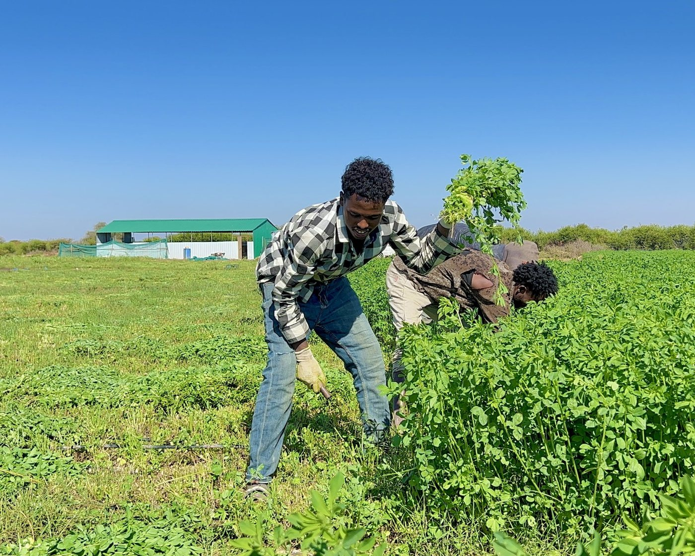
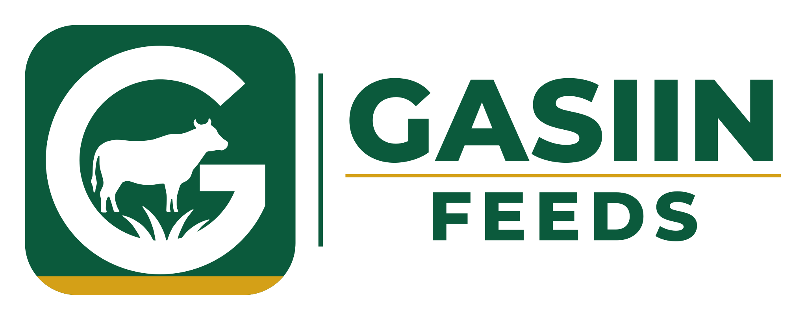
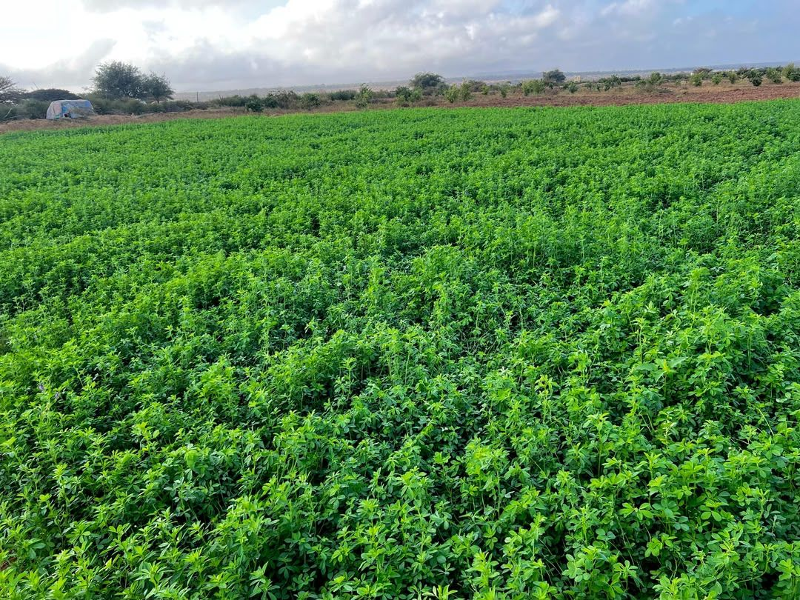
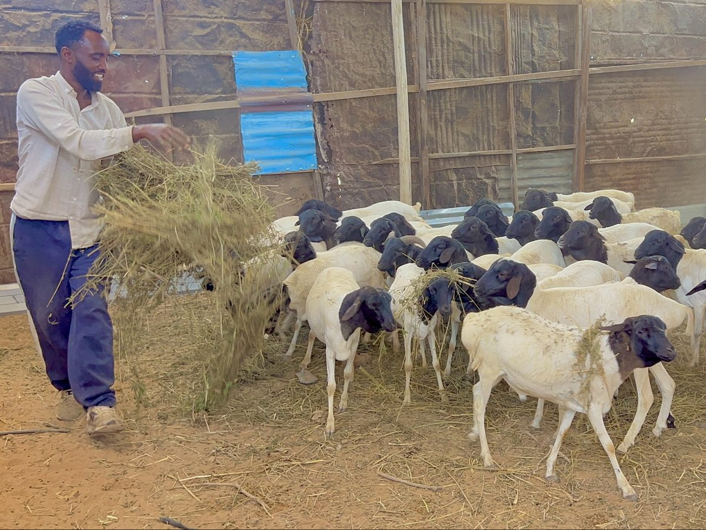
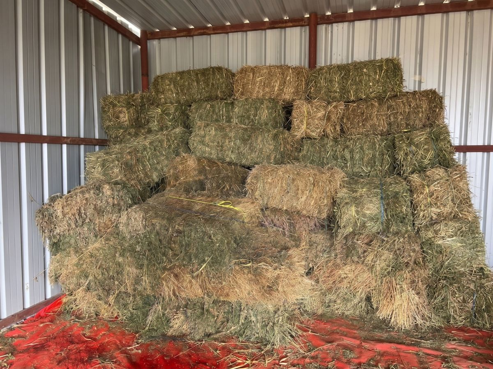
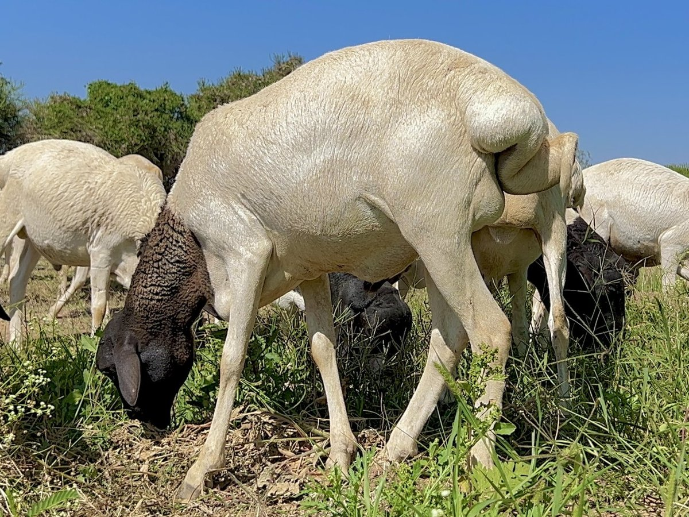
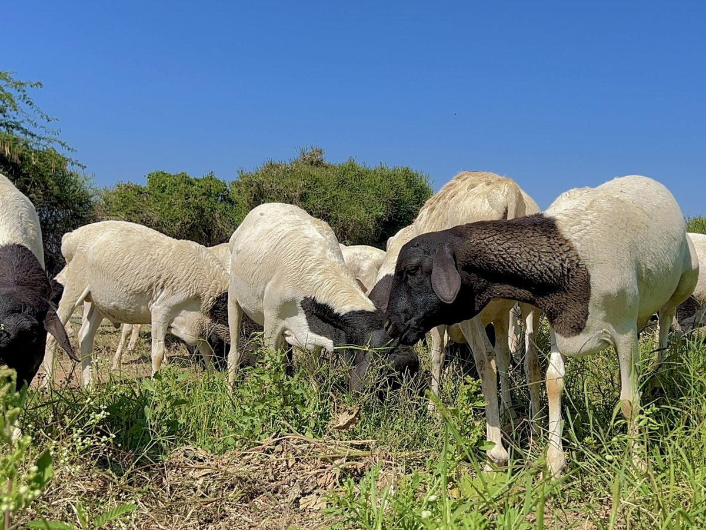
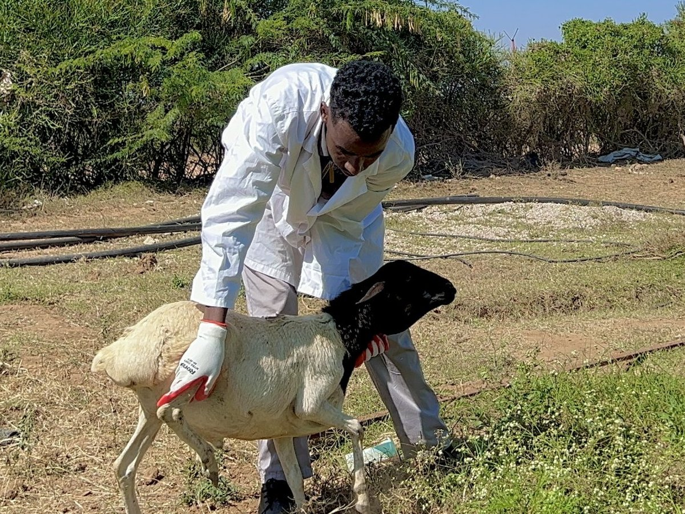

Graded quality hay
Sun-cured, dust-free forage harvested at peak nutrition, in 20–25 kg bales. Reliable roughage for dry-season herd maintenance.
Details →Gasiin Enterprise is building a reliable supply of quality animal feed, grown, preserved and blended locally, so that herds stay healthy and productive through every season, including the dry ones.

Gasiin Enterprise is building an integrated feed business: standardised, nutrient-balanced graded hay, vacuum-wrapped silage and species-specific concentrates for commercial dairy, poultry and pre-export livestock producers.
We also fatten sheep, goats and cattle for export, a model we have already piloted on a farm in Arabsiyo district, and we are building a network of local farmers to grow fodder for us under contract.
“Gasiin” is the Somali word for feed, or food. It is what we make, and what our work puts on tables across the region.
Farmers depend on expensive imported concentrates or seasonal, low-nutrient grass. When rains fail, there is not enough feed, and animals die. Gasiin exists to close that gap with affordable feed that is available all year.
Source: African Union Inter-African Bureau for Animal Resources (AU-IBAR).
Every product is made to a consistent specification and packed in sizes that suit a pastoralist buying a few bales or an exporter ordering by the truckload.
Sun-cured, dust-free forage harvested at peak nutrition, in 20–25 kg bales. Reliable roughage for dry-season herd maintenance.
Details →
Fermented, vacuum-wrapped green forage that keeps its nutrients all year. Improves digestibility and milk yield when pasture is scarce.
Details →
Protein and energy blends for dairy cattle, poultry, and sheep and cattle fattening, in 25 kg and 50 kg bags.
Details →Finishing sheep, goats and cattle to export weight ahead of peak Gulf demand.
Local farmers grow fodder under contract, with a guaranteed buyer, technical advice and quality benchmarks.
On-farm trials of two to three weeks and nutrition advice for dairy and poultry farms.
Feed supply for quarantine stations and export yards, starting with Berbera.
Gasiin is led by two founders who bring together agribusiness, livestock trade, production and management experience.
Twelve years of leadership in agribusiness, livestock trade and commercial operations. Leads Gasiin’s strategy and its relationships with livestock exporters and with dairy and poultry associations.
More than 20 years of experience in management and leadership, especially in the production sector. As part of Gasiin’s management, Kaisar oversees how the enterprise is run day to day: planning production, organising people and resources, and making sure the business delivers consistent, quality feed.






For product enquiries, bulk orders, contract farming or anything else, we would be glad to hear from you.